VEX Platform
Good prevention starts with great detection.
We call it an Offensive SOC. VEX looks for the accounts, settings and behaviors likely to become part of an attack, so there’s less to detect and respond to in the first place.
See how VEX worksDon’t take our word for it.
Add VEX to Slack for free. It gets to work right away. Get VEX for Slack
- Missing MFAVEX identifies the gap
- Odd sign-inAttempt is made
- Access deniedVEX already shut the door
- IncidentNever happens
How VEX works
The VEX loop.
VEX runs every piece of evidence through the same four stages: collect, triage, detect, update. Then it does it again.
Findings and human input become context for future investigations. When new information changes the picture, VEX can reassess.

- 01
Collect telemetry
Gather activity from connected systems. - 02
Triage signal
Assess the affected asset and investigate the signal. - 03
Detect evil
Determine whether activity is malicious, and challenge the conclusion. - 04
Update state
Carry findings and human judgment into the next investigation.
The loop: Collect
Look where an attacker would.
Attackers don’t stay inside the systems you watch most. VEX collects activity from identities, devices, domains, network gear and the SaaS apps you rely on, so its investigations start with what’s really happening.
Designed to make collection boring.
- 01
100+ integrations.
Connect platforms like Microsoft 365 and Google Workspace directly.
- 02
The VEX API.
Send in any other data source.
- 03
No API? Use email.
Forward reports and notices to the mailbox included with every VEX deployment.
The loop: Triage
Protect the asset. Investigate the signal.
Every signal is triaged as it arrives. If a breach looks likely, VEX can contain the account or device before the investigation is finished, so an attacker’s next move is already limited.
- 01
Protect the asset first.
When a breach looks likely, VEX can contain the account or device. A person may need to release it.
- 02
Pull the history.
VEX looks back through past activity, because a single event rarely tells the whole story.
- 03
Close what’s routine.
If the evidence shows nothing malicious, the signal closes itself. No one has to look at it.
The loop: Detect
Every answer has to survive a challenge.
Most tools wait for an event to match a rule. VEX asks a bigger question: given everything we know, has this business been compromised? Then it tries to prove its own answer wrong.
- 01
Ask one focused question.
An AI analyst gets the evidence, the history and instructions for this one investigation, and answers with its confidence.
- 02
Try to prove it wrong.
Other AI models check the same evidence. Some are told the answer is wrong and have to check for themselves.
- 03
Act on the result.
Agreement raises confidence. Above the threshold, your team gets a signal. Below it, the investigation closes.
“Given everything we know, has HR-laptop-428936 been compromised?”
The loop: Update
A signal is never final.
A signal isn’t a one-time alert. Whenever something changes, like a new event or a comment from your team, VEX rewrites what it knows and sends the signal through the loop again.
A knowledge store, not a pile of alerts.
- 01
Record the decision.
If VEX finds malicious activity, the signal stays open for a person to investigate. If not, it’s marked auto-closed.
- 02
Treat people as evidence.
A comment or a severity change from your team becomes part of the record, just like an event from an integration.
- 03
Run the loop again.
Every change sends the signal back through collect, triage and detect, with everything VEX now knows.
Operations
The AI SOC you don’t have to watch.
VEX runs the loop around the clock, and security operators watch it 24/7. Check in from Slack whenever you want. There’s a dashboard too, if you like one.
Most security tools start with a demo. VEX starts in Slack.
- 01No demo needed.
- 02Free to use.
- 03It goes to work as soon as it’s added.
Ready to start using VEX?
Get VEX for Slack
k.mooreComment · 11:04 AM
I didn’t install anything. I did open an invoice email yesterday.